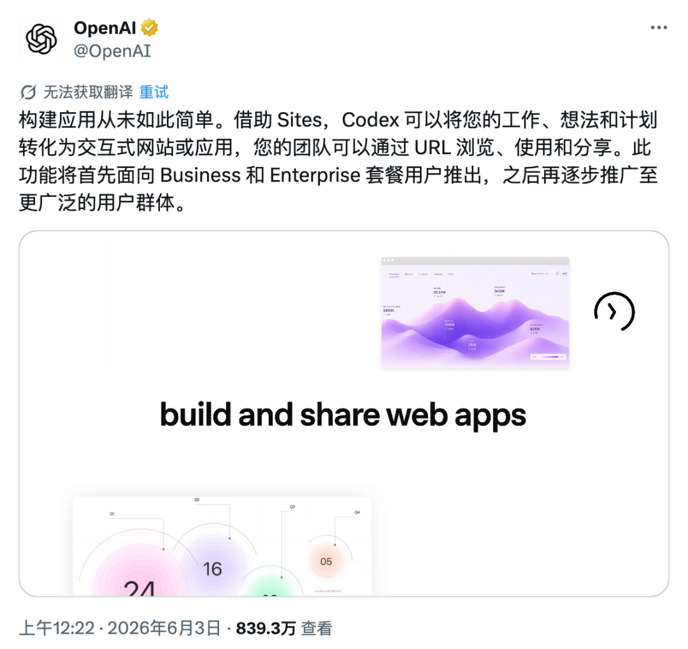
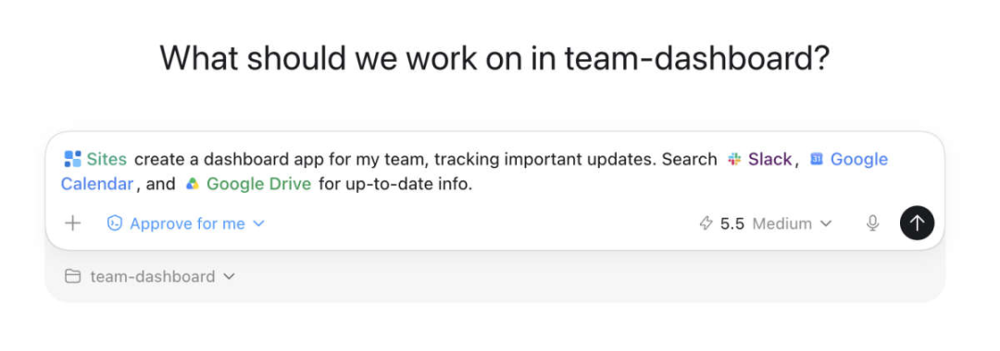
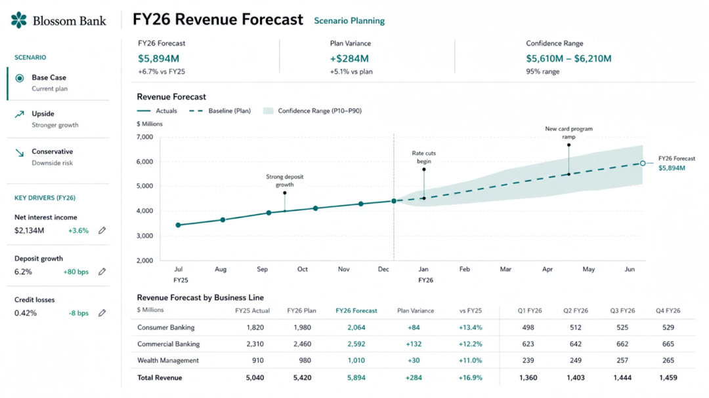
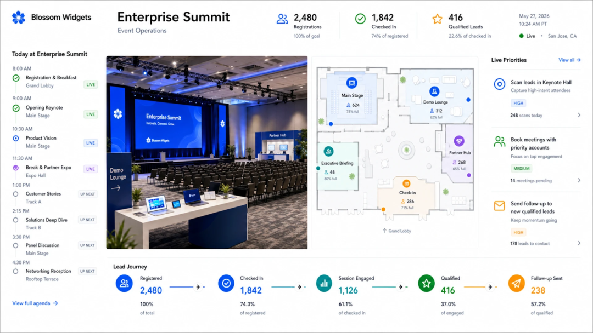
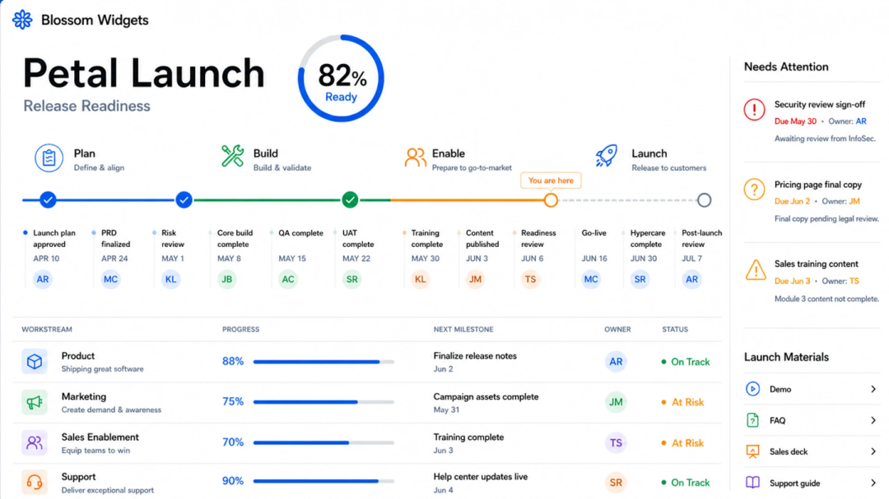
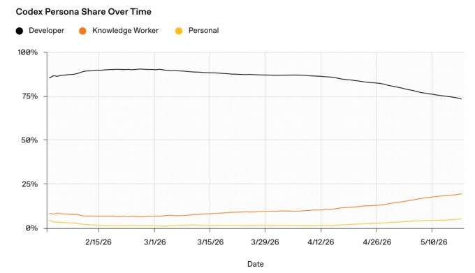

1
Save：落盘成版本
先把当前工作成果保存为版本化 HTML/app artifact。它必须有源文件、资产目录、可复现路径和明确用途。
- 主文件：
index.html - 本地资产：
assets/ - 来源与报告路径可追溯
这页把《一句话建站？Codex 新功能 Sites 简直太香了！》里的启发，转成 App HTML Visual 可执行流程：不是只生成页面，而是把工作成果变成有人能打开、能检查、能复用、能交给下一个人的浏览器载体。
Sites 的价值不是“生成网页”四个字，而是把交付链路补上。5视觉应该把这个拆成三个可验收阶段。
先把当前工作成果保存为版本化 HTML/app artifact。它必须有源文件、资产目录、可复现路径和明确用途。
index.htmlassets/HTML 存在不等于完成。必须确认内容、图片、布局、移动端、交互和状态都能被真实用户看懂。
交付时说明访问路径、目标受众、权限范围和剩余边界。发布、权限、后台配置不由 5视觉默认越权处理。
这些规则可以进入 5视觉 日常工作方式，用来判断一个 HTML artifact 是不是已经能交付。
先问“谁要打开它、用它做什么”，再决定是文章、报告、仪表盘、内部工具还是公众号包。
优先把已有 Markdown、报告、数据、图片、项目变成浏览器表面，而不是重新发明一个 landing page。
表单、筛选、上传、保存、权限、刷新后的状态，不能按纯静态文章验收。
保留原始截图、尺寸、caption 和出处。不要把信息图裁成统一比例，也不要用泛化插画替掉真实 UI。
完成标准至少包括路径、资产、截图、预览方式、受众、边界和下一步。
这篇文章里的图片大多是产品截图和仪表盘，正好提醒我们：信息密度高的截图必须单列、原比例、可读、可追溯。






| 事项 | 5视觉可做 | 需要协作 | 停止点 |
|---|---|---|---|
| HTML artifact | 生成页面、整理资产、做视觉验收、给预览 URL。 | 复杂 app 逻辑交给代码/app owner。 | 不把本地 HTML 直接等同生产部署。 |
| Sites 规则 | 吸收交付理念和视觉 QA 规则。 | 1总控/8搜索验证官方文档后才能固化为产品流程。 | 不把公众号文章说法写成事实政策。 |
| 公众号来源 | 读取本地 Markdown、图片，分析视觉规则。 | 4公众号负责下载保真、草稿、封面、发布验收。 | 不重新下载，不发布，不改登录态。 |
| 权限与部署 | 在报告中说明目标受众和访问范围。 | 部署、权限、密钥、环境变量需明确授权和对应 owner。 | 不配置 secret，不改 workspace 权限。 |
增加 Share/Deploy Readiness：受众、访问范围、Save/Review/Share、状态型 UI 验收。
强调 HTML 文件存在不等于完成；dashboard 截图和信息图必须保留原比例。
增加 Sites-like artifact handoff：母版、assets、evidence、预览、部署边界。